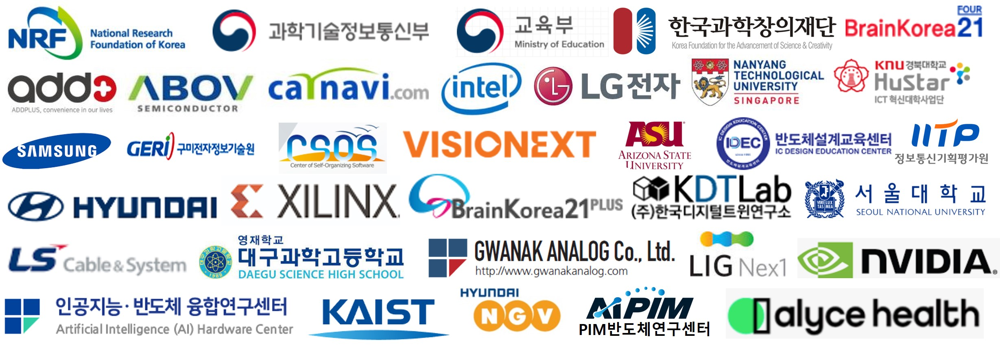

AI-Embedded System-Software-on-Chip Platform Lab
 Welcome to AI-Embedded System-Software-on-Chip (AI-SoC) Platform Lab as Sub Group of ACES Lab. Our research group focuses on the following architecture to realize the accelerated intelligence in systems-software-on-chip by dynamic partial replacement of on-chip hardware and embedded software.
Welcome to AI-Embedded System-Software-on-Chip (AI-SoC) Platform Lab as Sub Group of ACES Lab. Our research group focuses on the following architecture to realize the accelerated intelligence in systems-software-on-chip by dynamic partial replacement of on-chip hardware and embedded software.
 |
For Prospective Applicants
Open Position in SoC/Circuit Design Team by Industrial Collaboration Program (Samsung, SK Hynix, LG Electronics)
Open Industrial Internship Program in USA (Microsoft, Google, Nvidia)
Open Visiting Scholar Position by International Academia Collaboratoin Program (NTU, Texas A&M, University of Washington, Arizona State University)
News

2021-05 Dr. Lee's paper was accepted to IEEE Access (SCIE Q1, IF 3.745)
2021-04 Our research lab received a research grant (PI) from Ministry of Science and ICT, focusing on Metamorphic AI-centric Software-on-Chip.
2021-04 Our research lab received a research grant (PI) about Vision-LiDAR Fusion-based Eye on Lightweight Realtime Embedded Processors.
2021-03 Our research lab received a research grant (Co-PI) from Center of Self-Organizing Software, focusing on Self-Organized Community Computing Platform for Resilient Environment.
2021-02 Our research lab received a research grant (PI) from DHS supported by KOFAC, focusing on AI Bio-Signal Processing Algorithm-based Contact-less Medical Healthcare.
2021-03 Dr. Seok's paper was accepted to IEEE Access (SCIE Q1, IF 3.745)
2021-03 Dr. Lee's paper was recommended as a selected one to the Special Issue in Human-centric Computing and Information Sciences (SCIE Q1, IF 3.7)
2021-02 Dr. Lee was nominated as Official Post-Doctoral Researcher (BK21 Four) in School of Electronics Engineering in Kyungpook National University.
2021-02 PhD collaborator Mr. Oh's paper was accepted to Applied Science (SCIE).
2021-01 PhD student Mr. Kwon's paper was accepted to IEEE ISCAS 2021 as regular oral paper.
Sponsored Active Research Grants
Our research group has been sponsored from the national research fund (NRF), research institutes and various industrial companies. Welcome to contact us about the technology transfer, technical consulting, and discussion for future collaboration.
Metamorphic Unstructured Validation/Verification for Analyzing Binary Code, 2021-2025, IITP
Self-Organized Community Computing Platform for Resilient Environment, 2018-2027, NRF.
Vision-LiDAR Fusion-based Eye on Lightweight Realtime Embedded Processors, 2021, KNC.
Light-weighted Intelligent System/Software-on-Chip/Cloud Platform, 2019-2022, NRF.
DSI3 Robust Interface for Automotive Connectivity Applicatons, 2021, GAF.
AI Bio-Signal Processing Algorithm-based Contact-less Medical Healthcare, 2021, DHS.
BK21 Four Project in School of Electronic and Electrical Engineering, KNU, 2020-2028, NRF.
Supported By
|  |
Contact
| 80 Daehak-ro, Buk-gu,
School of Electronics Engineering, Kyungpook National University (KNU) IT-1 Building, no.719, Tel. 053-950-5548 Daegu, South Korea, 41566 Email: boltanut at knu.ac.kr Office Hours: pre contact |